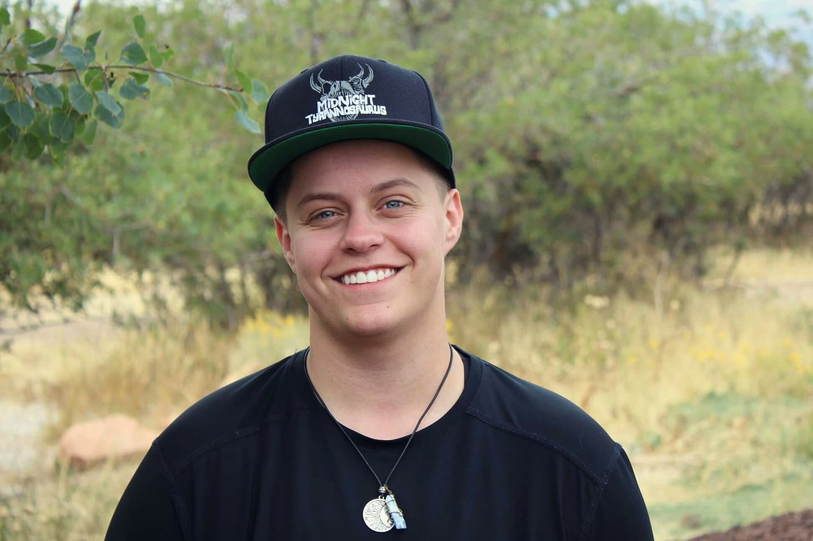

About Me
I am a student through the University of Utah's Full Stack Web Development course. My career thus far has been in customer service as I love to help others. I chose this new career path to find new ways to help others such as creating a platform for my friends to promote their businesses, or to make a website for my family to plan the annual reunion since a lot of the older generation doesn't use Facebook. Ultimately I'd love to be on a development team for a company that changes the world for the better environmentally, socially, and politcally.
In this program we learn: HTML / CSS3, JavaScript / JQuery / Node.js, PHP, Express.js / React.js / Bookshelf.js, Database Theory, MongoDB, MySQL, Command Line, and Git/GitHub. I am dedicated to continue my education as a Full Stack Developer; beyond this course I will be pursuing certifications in Python, Ruby, C#, and C++. Additionally, I want to become proficient in UI/UX and Graphic Design.
Outside of the classroom; I'm a brother, an uncle the coolest toddler, a friend, and a cat dad to two chaotic kitties. In my spare time I like to go camping, play video games, go to concerts, and volunteer in the local community.
I can be found on LinkedIn and GitHub. Please email me at ashpap.codes@gmail.com or use my contact page to reach out with any questions regarding my portfolio.